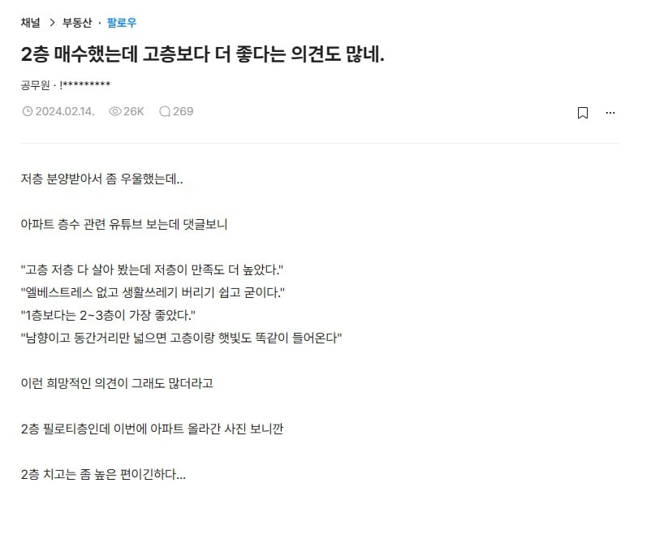
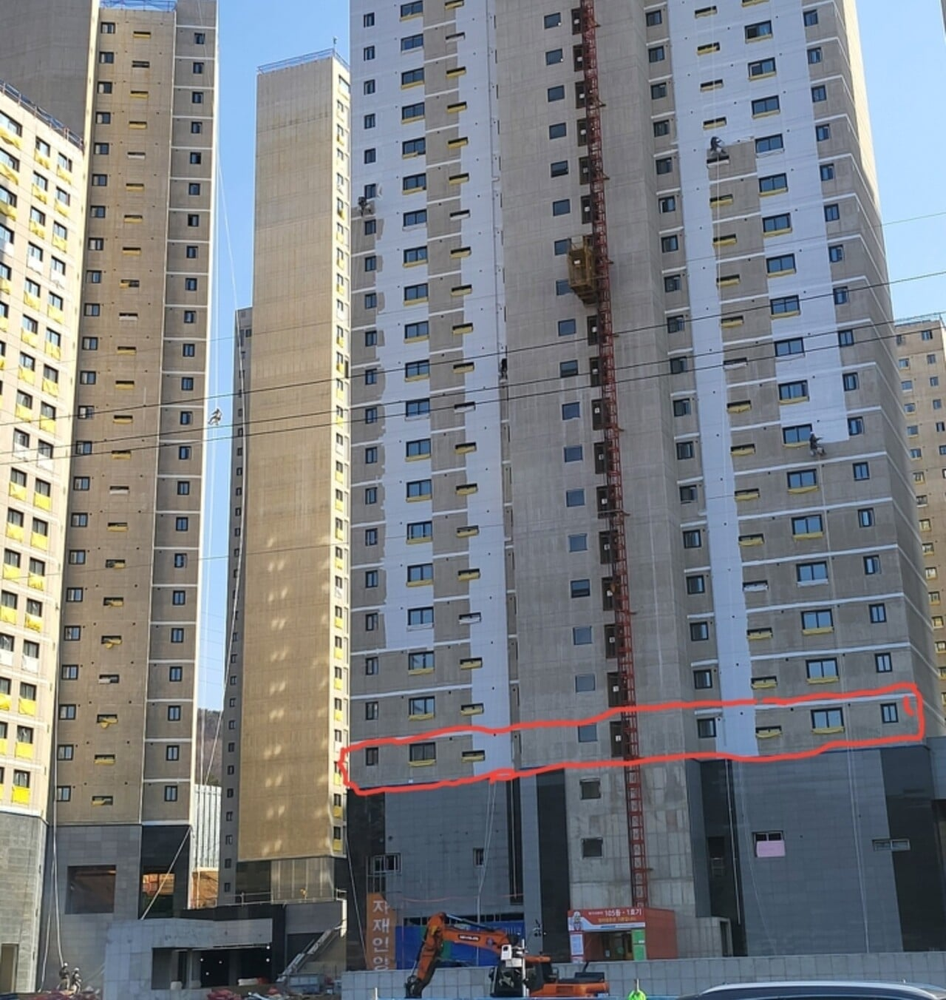

2층
장점 : 엘리베이터 안 기다려도 됨
단점 : 뷰가 안좋고 꼭대기보다 시끄러움
꼭대기층
장점 : 엘리베이터 엄청 기다려야 함
단점 : 뷰가 좋고 조용함
둘 중 하나 살 수 있다면 어디 삼?


2층
장점 : 엘리베이터 안 기다려도 됨
단점 : 뷰가 안좋고 꼭대기보다 시끄러움
꼭대기층
장점 : 엘리베이터 엄청 기다려야 함
단점 : 뷰가 좋고 조용함
둘 중 하나 살 수 있다면 어디 삼?
옥상 열어놔??
옥상은 법적으로 열어둬야함
옥상 갈때마다 잠겨있길래 잠가 놓는줄 ㅋ
잠겨잇는데도 많더라.
화재시만 자동으로열리는 시스템 되잇던데?
보통은 자동개폐시스템으로 잠궈놓던데.
애들올라가서 사고난다고.
어렸을때는 아파트옥상다열려있었는데.
어느순간부턴 다 잠궈놓더라. 열면 경보울림
펜트하우스면 꼭대기
아니라면 2층
꼭대기층은 일단 단열쪽은 취약함
상하에 세대가 있는 층보다 에너지 비용이 더 들어감
저층은 햇빛이 안 들어옴... 사생활보호도 취약
바퀴벌레도나옴
외부에는 안 보이고 내부에서는 보이는 유리는 많이 비싼가??
비싸고 밖이 밝고 안이 어두울때만 안보이는거임
안이 밝고 밖이 어두운 밤에는 커튼 쳐야함
그러면 별로네
안에서 불키면 그런거 없이 그냥 다보임
필름 있음
그런 유리는 밝은 곳에서 빛을 반사시키는건데 반대로 밤되면 안에서 밖이 안보이고 밖에서는 안이 엄청 잘보임 ㅎㅎ
2층계단 이야기도 옛이야기인게 요즘은 차를 지하로넣어서 짜피 엘베타야될거임 ㅇㅅㅇ
1층은 정원 사용권이나 전용 출입구라도 주는데 2층은 좀...
절때 6층아래집은 살지마 택배차가 구르마만 굴려도 다들림
소리만 아니라 냄새랑 벌레에도 취약해
14층살다 2층왔는데 무조건 2층임
차라리 1층살지 2층 넘무애매함
탑층 장점
단지내 잼민이들 뺙뺙소리 안들림
뷰 미쳤음
배달기사가 음식놓고 바로 엘베탈 수 있기때문에 나체로 음식 수령쉬움
층간소음 없음
단점
어디 누수없나 긴장해야함
엘베고장시 답없음
냉난방비가 더들어
나무 식재 같은거 생각하면 3층이하는 별로임
벌레도 더 짤꼬이고, 지상에서 나는 소음(자동차, 사람목소리, 기타 등등)도 심하게 더 잘들림
제일 이상적인건 9~12층
8층까지도 좀 채광문제 있고 12층이 진짜 딱 좋음
18층 위로 살때 엘베 고장, 교체하면 옆라인 가야하고 진짜 미치겠더라
저 정도로 높으면 괜찮긴하겠다
고령화 되면서 저층 수요 ㅈㄴ 있음
벌레때문에 고층 선호하긴 함 높을수록 확실히 벌레 덜꼬임
나이 들면 저층이 맞아. 꼭대기층은 젊었을때 살아보는거고.
저층은 채광이 잘 들어오면 살만한데 아니면 곰팡이 지옥을 맛볼 수 있음
필로티 가만하더라도 10층은 돼야..
아무리 못해도 진짜 최소로 잡아도 6~7층임.
내가 둘다 살아봤는데 압도적으로 고층승임 ㅋㅋㅋ
일반적 2층이면 옥탑이 더 나은데
사진상으로 보이는 5층 같은 2층은 괜찮아보임
신축이라면 하수역류나 이런것도 없을거 같고
확실히 1층이 좀 구리긴하더라
2~3층은 밖과 확장성/연결성이 확실히 좋음 이유없이 밖에 나갈 수 있음 이게 상당히 큰 장점이었음 그리고 예민한사람은 알수 있는데 공기가 안정적임
지금 30층살고 있는데 목적이 확실할때만 나가게 됨 엘베에서 다른층 사람들 눈/인사`피하는것도 나같은 i한테는 약간의 부담임 쓸데없이 폰보고 있음
옥탑층은 아랫층 층간소음 없고 전망, 일조량 확보되는점은 분명한 강점 여름은 에어컨으로 어렵지않게 극복되는데, 겨울 난방은 힘들어 아무리 보일러틀어도 금방식어 따뜻한집의 아늑함 만들기가 어려움
2층 살았었는데 편했음
분리수거도 편하고 출퇴근도 계단 한층만 이동하면 되고
엘베 수리일 때도 해당사항 없고
부동산에서 가장 안좋은게 2층이다.
1층은 거동불편하거나 어린자녀 있는 가구 수요가 꾸준히 있는데
2층은 층간소음 신경 덜쓰는거도 아니고, 사생활 보호가 잘 되는거도 아니고, 이동이 편한거도 아님. 그래서 가장 잘 안팔리는 층이 2층임
심지어 필로티 구조면 아랫쪽이 외부랑 연결되서 단열도 안좋고 소음도 올라와서 진짜 최악이다
애들 키우면 압도적으로 최하층 추천 애들 없으면 탑층 추천
저층은 벌레 때문에 싫어ㅜㅜ
꼭대기층이 좋은게 옥상층 바로 이용할수있음ㅇㅇ
밤에 별보러갈때 좋음